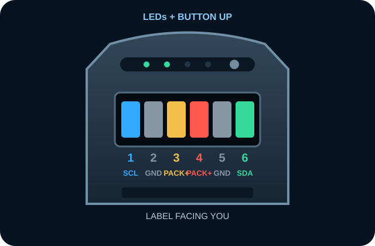
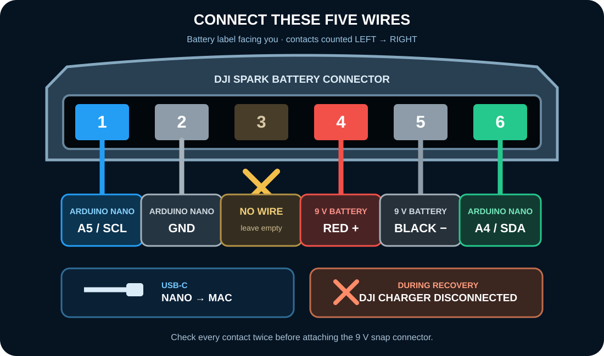

MAC + ARDUINO NANO MATTER
DJI Spark battery recovery
Wire the sleeping pack, start the protected local helper, then run the verified PF reset from this page.
Stop immediately if the pack is swollen, warm, leaking or smells unusual. Keep it on a non-flammable surface and supervise it continuously.
1
ONE-TIME SETUP
Open the Mac helper
The browser cannot access USB by itself. Download, unzip and Control-click DJI-Spark-Recovery-Mac.command → Open. Keep its Terminal window open. This page connects to it automatically—no new page opens.
Download Mac helperLocal helper not connected
2
WIRING
Connect exactly as shown
Battery LEDs/button upward, label facing you, six contacts facing you. Count contacts from left to right.


| From | To Spark contact |
|---|---|
| Nano A5 / SCL | 1 — SCL |
| Nano GND | 2 — GND |
| 9 V red / + | 4 — PACK+ |
| 9 V black / − | 5 — GND |
| Nano A4 / SDA | 6 — SDA |
Connect the Nano Matter to the Mac by USB-C. Do not connect the DJI charger during recovery.
3
RECOVERY
Run and verify
Recovery outputWaiting
Open the Mac helper to begin.
Recovery complete. Disconnect the 9 V battery and Nano, then charge only with the genuine DJI charger under continuous supervision. Stop for heat, swelling, smell or a charging fault.